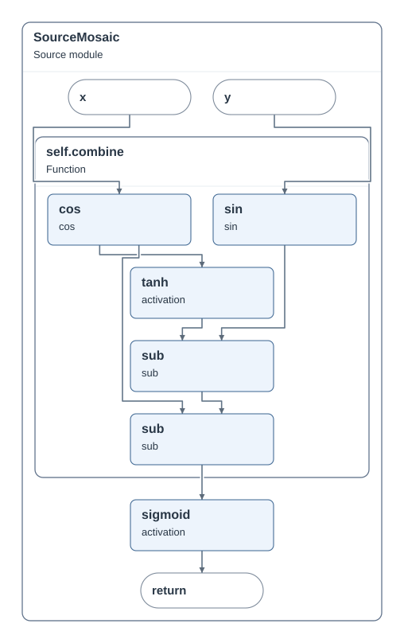

before · main

SourceMosaic-before-trial-2 · 点击查看原始 SVG
SourceMosaic 两版均用一张主图兑现 9/9 项目标。源码视图仍可恢复 16 节点、14 条边。
SourceMosaic-before-trial-2 · 点击查看原始 SVG

SourceMosaic-current-trial-2 · 点击查看原始 SVG
[
{
"eligible": true,
"reasons": [],
"projected_nodes": [
"model/12:4:composite:1",
"model/12:4:composite:1/12:22:interface:1",
"model/12:4:composite:1/12:25:interface:1",
"model/12:4:composite:1/7:4:composite:1",
"model/12:4:composite:1/7:4:composite:1/8:12:compute:1",
"model/12:4:composite:1/7:4:composite:1/9:12:compute:1",
"model/12:4:composite:1/7:4:composite:1/10:15:compute:1",
"model/12:4:composite:1/7:4:composite:1/10:15:compute:2",
"model/12:4:composite:1/7:4:composite:1/10:15:compute:3",
"model/12:4:composite:1/13:15:compute:1",
"model/12:4:composite:1/13:8:interface:1"
],
"projected_edges": [
"e00002",
"e00000",
"e00004",
"e00001",
"e00006",
"e00003",
"e00007",
"e00008",
"e00005",
"e00009",
"e00010",
"e00012",
"e00011",
"e00013"
],
"role_request": null,
"request": "inline:relation:relation:source-uses:model/12:4:composite:1/7:4:composite:1/8:12:compute:1",
"comparison_round": 0
}
]